#2345 Somewhere
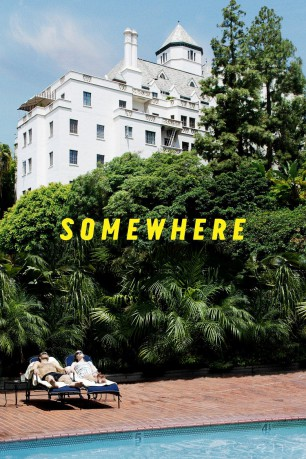 
 IMDB-Wertung: 6.3 / 10
IMDB-Wertung: 6.3 / 10  Metascore: 67
Metascore: 67 
Schauspieler Johnny Marco (Stephen Dorff) lebt in den Tag hinein. Er ist ziemlich berühmt, gewinnt Preise und wohnt in einem Hotel in Kalifornien. Dort frönt er seinem Star-Dasein ganz traditioneller Weise mit Starlets und One-Night-Stands, mit Partys, Drogen und auch viel Langeweile.Alles ändert sich schlagartig, als ihn seine 11-jährige Tochter (Elle Fanning) besucht. Eines Tages steht sie in seinem Zimmer. Seit ihrer Anwesenheit ist der Darsteller wie ausgewechselt und blickt ganz anders auf das Leben. Dabei ist unklar, wer hier für wen Verantwortung übernimmt und wer größeren Einfluss auf den anderen hat. Aber wird die Konstellation von Vater und Tochter lange halten?
Jahr: 2010
Dauer: 97 Minuten
FSK: 12
Land: USA Studio: Focus FeaturesTonspuren: DTS - ,
Untertitel:
Auflösung: 1080p (1920x1040) Größe: 9953 MB
Genre: Komödie, Drama
Regisseur:  Sofia Coppola
Sofia Coppola
Drehbuch: Sofia Coppola
Soundtrack: Phoenix
Darsteller:
- 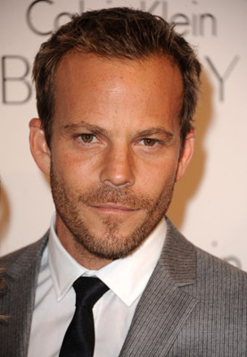 Stephen Dorff als Johnny Marco
- 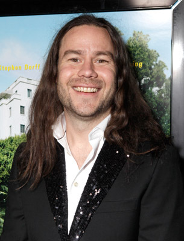 Chris Pontius als Sammy
- Erin Wasson als Party Girl #1
- Nathalie Fay als Party Girl #3
- Kristina Shannon als Bambi
- Karissa Shannon als Cindy
- John Prudhont als Chateau Patio Waiter
- Angela Lindvall als Blonde in Mercedes
- Maryna Linchuk als Vampire Model
- 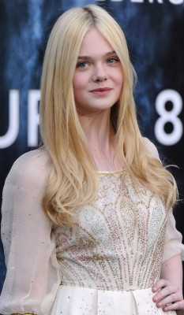 Elle Fanning als Cleo
- Lala Sloatman als Layla
- Aurélien Wiik als French Guy
 Amanda Anka als Marge
Amanda Anka als Marge- 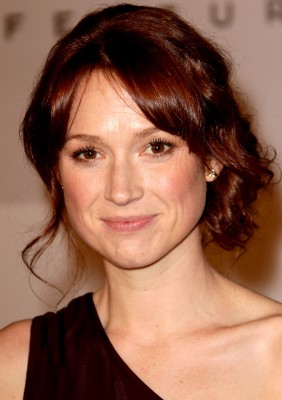 Ellie Kemper als Claire
- Brian Gattas als Studio PR Man
- Randa Walker als Eager PR Woman
 Michelle Monaghan als Rebecca
Michelle Monaghan als Rebecca- Silvia Bizio als Italian Journalist
- 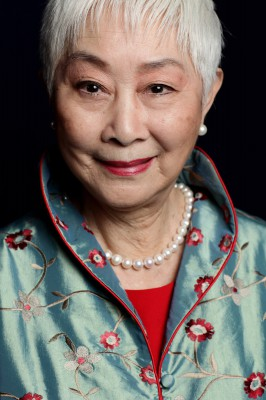 Lisa Lu als Chinese Journalist
- Alexander Nevsky als Russian Journalist
- Aida Takla als Egyptian Journalist
- Emanuel Levy als Israeli Journalist
- Io Bottoms als Receptionist
- Paul Greene als Ron the Masseur
- Eliza Coupe als Hotel Room Neighbor
- Nicole Trunfio als Brunette Bikini Beauty
- Timothy Starks als LAX VIP Services
- Davide Borella als Hotel Manager - Milan
- Jo Champa als Pupi's Wife
- Laura Chiatti als Sylvia
- Simona Ventura als Telegatto Host
- Maurizio Nichetti als Telegatto Award Recipient
- Valeria Marini als Telegatto Special Guest
- 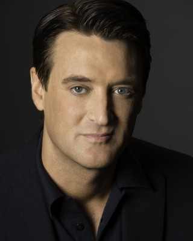 Philip Pavel als Hotel Manager
- Damián Delgado als Victor
- Laura Ramsey als Naked Blonde with Sailor Cap
- 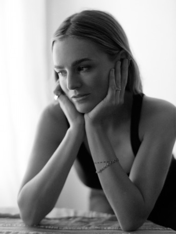 Nathalie Love als Young Wasted Girl
- 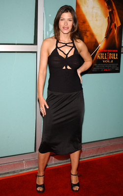 Caitlin Keats als Chateau Lobby Guest
- 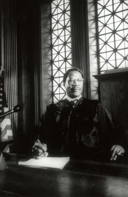 David Jean Thomas als Casino Croupier
- Peter McKernan als Helicopter Pilot
- C.C. Sheffield als Woman Getting Haircut
 Peter Arpesella als Voice over actor , uncredited
Peter Arpesella als Voice over actor , uncredited- Brooke Bickford als L.A. Girl #1 , uncredited
- Benicio Del Toro als Celebrity , uncredited
- Rich Delia als Richie , uncredited
- 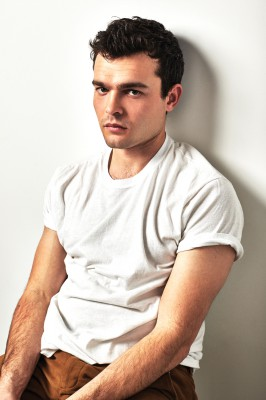 Alden Ehrenreich als Actor at party , uncredited
- Stephanie Ellis als Suite Party Girl , uncredited
- Yeena Fisher als Foreign Press , uncredited
- Rebecca Fraiser als LA Girl #2 , uncredited
- Jennifer Gall als Hotel Guest with Dog , uncredited
Datei: X:\2010(N-Z)\Somewhere (2010, FSK12, 1920x1040).mkv seit 31.10.2015
Festplatte: HD 2010(G-Z)-2011(A-F)
 Es gibt insgesamt 115 Filme in der Gruppe '2010(N-Z)'
Es gibt insgesamt 115 Filme in der Gruppe '2010(N-Z)'